Science you can play, from primary school to university.Bilimi oynayarak öğren: ilkokuldan üniversiteye.
KuARK is a free, non-commercial platform of science games built at Izmir Demokrasi University: 150+ games and 3,000+ levels, in 26 languages.
KuARK, İzmir Demokrasi Üniversitesi’nde geliştirilen ücretsiz ve ticari olmayan bir bilim oyunları platformu: 150’den fazla oyun, 3.000’den fazla seviye, 26 dil.
oyun.idu.edu.tr · opening soon; until then, the latest version runs at kuark-production.up.railway.app.yakında açılıyor; o zamana kadar son sürüm kuark-production.up.railway.app adresinde.
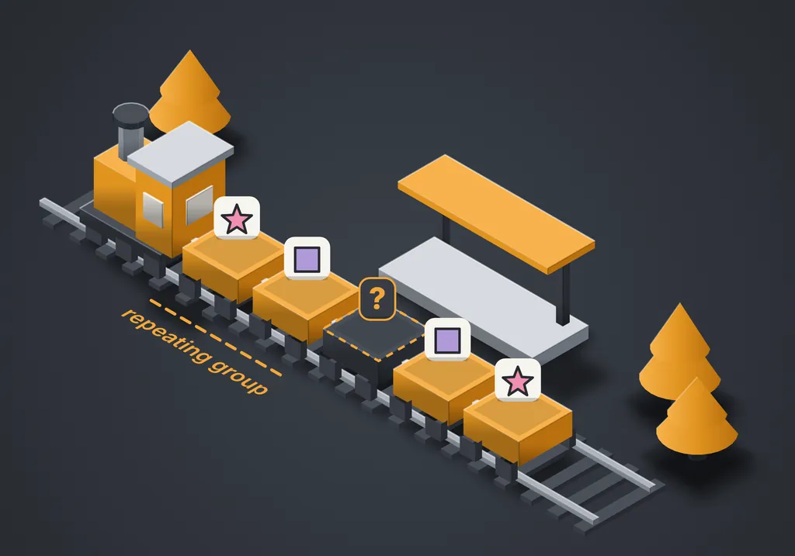
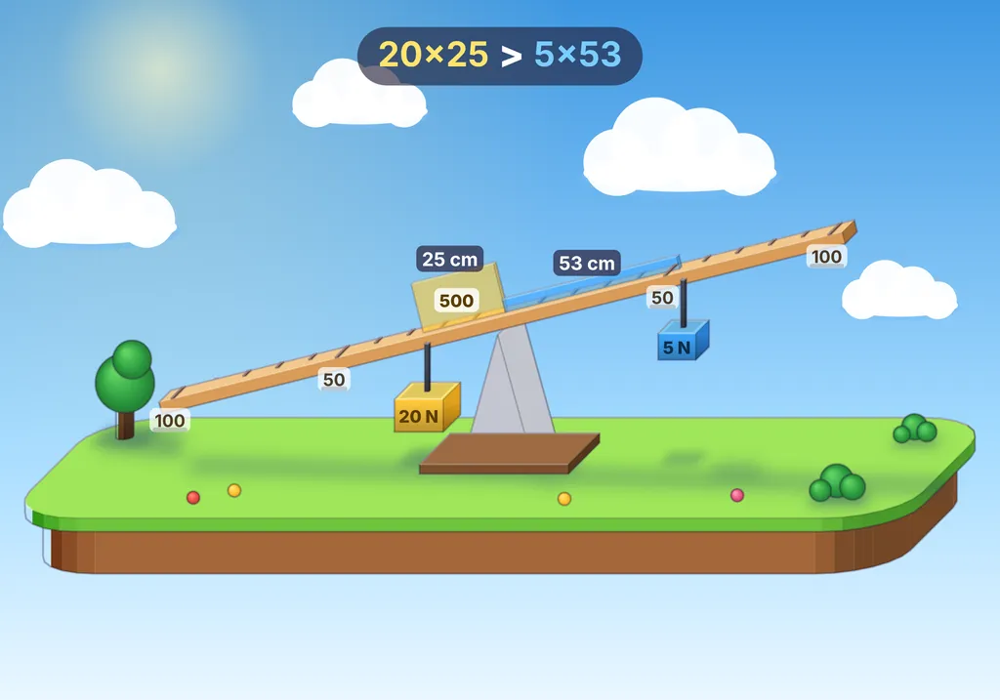
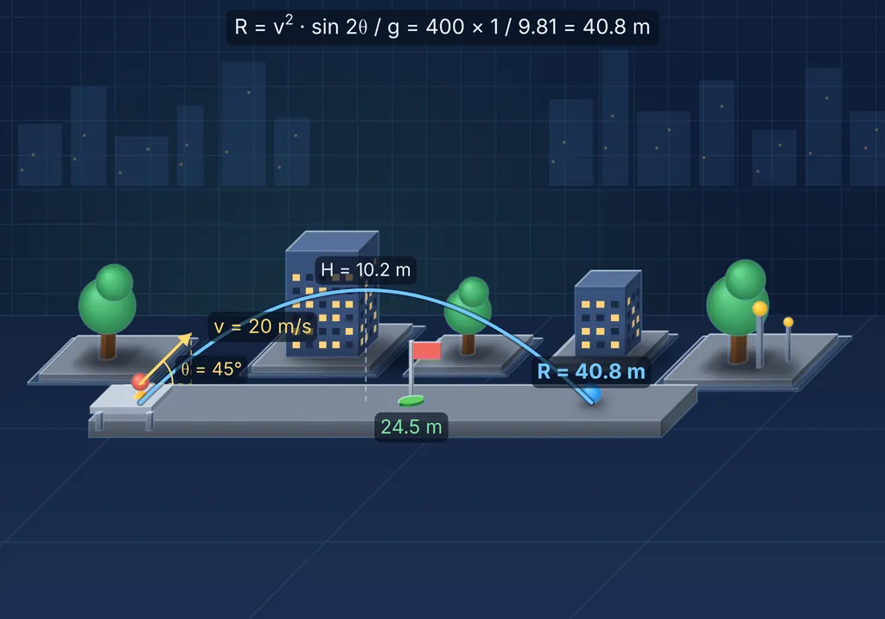
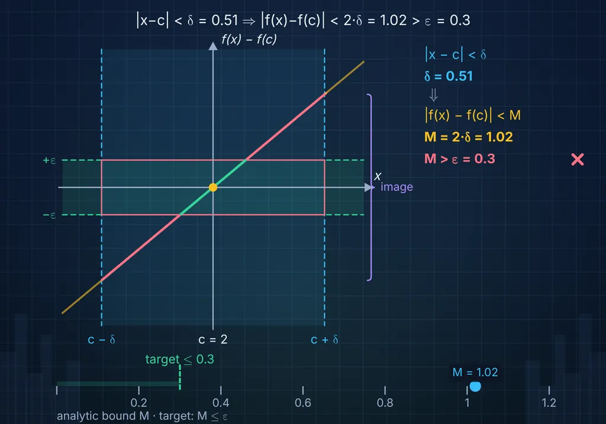
One platform, every stageTek platform, her kademe
Each game is a lab: set the values, try, and see what the science does. The answer appears only after the level is solved.
Her oyun bir laboratuvar: değerleri ayarla, dene ve bilimin ne yaptığını gör. Cevap ancak seviye çözülünce görünür.
Primary schoolİlkokul
Grades 1–4: numbers, patterns, fractions, shapes, reading, time.1–4. sınıf: sayılar, örüntüler, kesirler, şekiller, okuma, zaman.
8 games · 160 levels8 oyun · 160 seviyeMiddle schoolOrtaokul
Grades 5–8: levers, density, circuits, algebra, probability, heritage games.5–8. sınıf: kaldıraç, yoğunluk, devreler, cebir, olasılık, miras oyunları.
40 games · 820 levels40 oyun · 820 seviyeHigh schoolLise
Grades 9–12: motion, waves, gases, genetics, solutions, astronomy.9–12. sınıf: hareket, dalgalar, gazlar, kalıtım, çözeltiler, gökbilim.
25 games · 500 levels25 oyun · 500 seviyeUniversityÜniversite
Undergraduate labs from mathematics to medicine, law, economics and the arts.Matematikten tıbba, hukuka, iktisada ve sanata lisans laboratuvarları.
92 labs · 1,840 levels92 laboratuvar · 1.840 seviyeAlso on the platform: 5 games on AI literacy, 6 on the city and its ecology, and 10 open worlds from quantum spin to living networks.
Platformda ayrıca yapay zekâ okuryazarlığı üzerine 5, kent ve ekoloji üzerine 6 oyun ile kuantum spinden canlı ağlara 10 açık dünya var.
Science from a shared heritageOrtak mirastan bilim
Games built on the work of Al-Khwarizmi, Al-Biruni and Ulugh Beg, and on the yurt, Mangala and knucklebones.
Harezmî, Bîrûnî ve Uluğ Bey’in çalışmalarından; otağdan, mangaladan ve aşıktan doğan oyunlar.
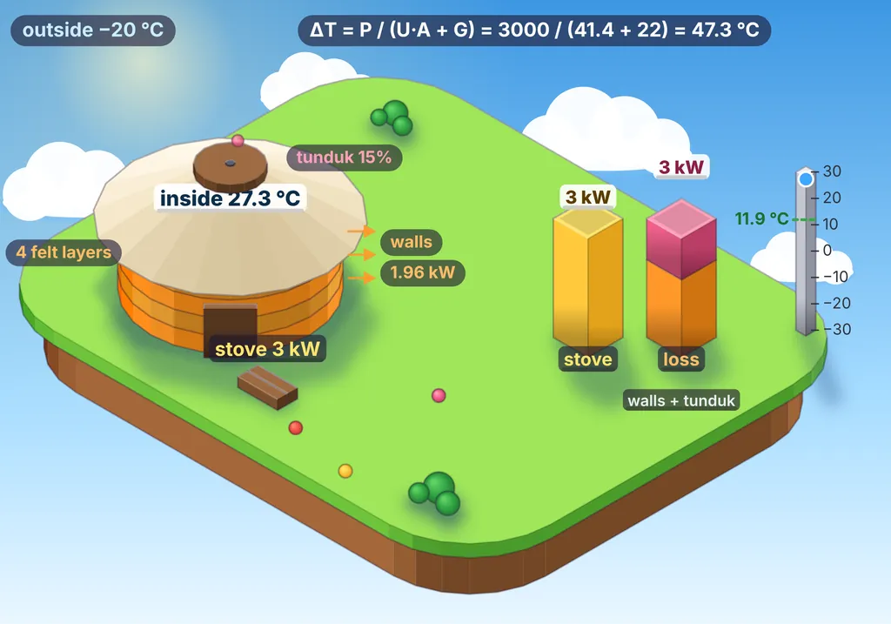
Yurt EngineerOtağ Mühendisi
Felt, tunduk and stove: how warm is it inside on a winter night?Keçe, tündük ve soba: kış gecesinde içerisi kaç derece?
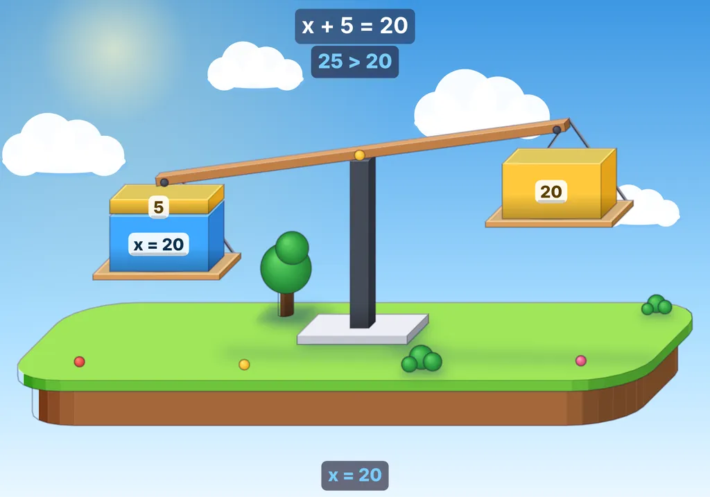
Al-Khwarizmi’s BalanceHarezmî’nin Terazisi
When the balance levels, you have found the unknown.Terazi dengedeyse bilinmeyeni buldun.
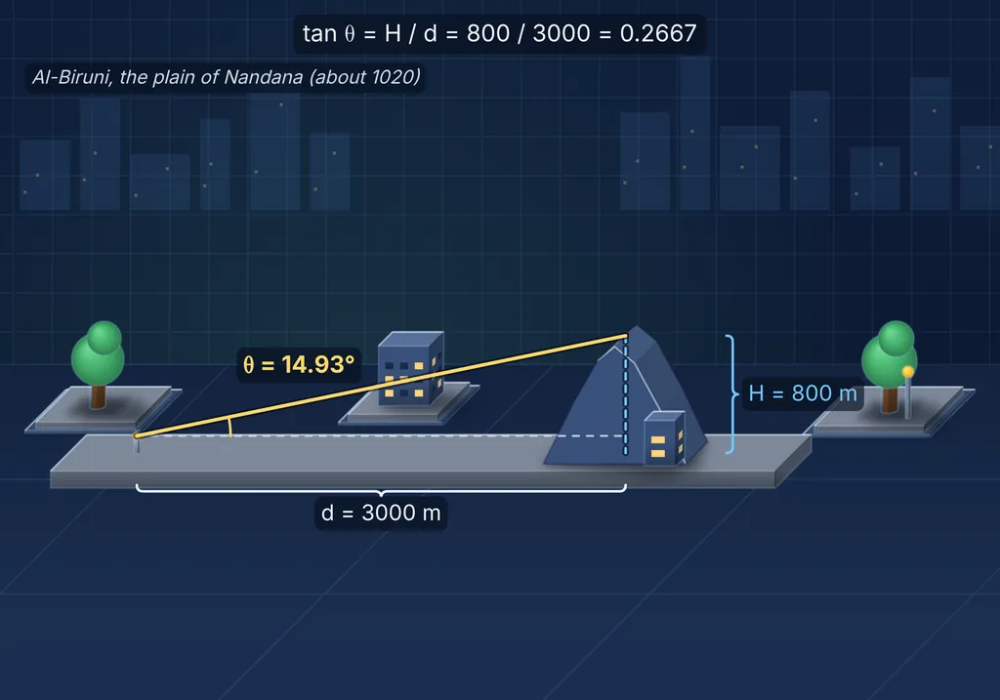
Al-Biruni Measures the EarthBîrûnî Dünyayı Ölçüyor
One mountain, one horizon: the size of the Earth.Bir dağ, bir ufuk çizgisi: Dünya’nın büyüklüğü.
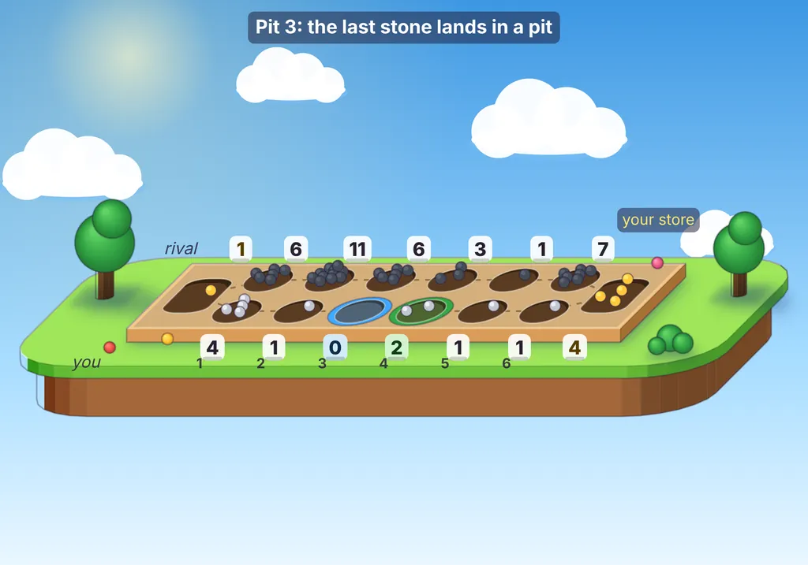
Mangala
Forty-eight stones, twelve pits: where does the last stone land?Kırk sekiz taş, on iki kuyu: son taş nereye düşer?
Made for real classroomsGerçek sınıflar için
Phones, tablets, laptops and smart boards. No ads and no fees.
Telefon, tablet, dizüstü ve akıllı tahta. Reklam yok, ücret yok.
Checked by the serverSunucuda doğrulanır
A level counts only after the server replays the solution with the game’s own rules.Bir seviye, sunucu çözümü oyunun kendi kurallarıyla yeniden oynattıktan sonra sayılır.
Ready lessonsHazır dersler
Plans for 15, 30 or 40 minutes in Turkish and English: predict, test, explain and transfer. They open without an account.15, 30 ya da 40 dakikalık, Türkçe ve İngilizce planlar: tahmin et, dene, açıkla ve aktar. Hesap açmadan açılır.
For the teacherÖğretmen için
Class screens, live lessons and a smart-board view for playing a game together.Sınıf ekranı, canlı ders ve bir oyunu sınıfça oynamak için akıllı tahta görünümü.
Science PassportBilim Pasaportu
Skills become signed Open Badges 3.0 that anyone can verify.Beceriler, herkesin doğrulayabileceği imzalı Open Badges 3.0 rozetlerine dönüşür.
Curriculum linksÖğretim programıyla bağ
K–12 games are mapped to the learning outcomes of Türkiye’s Maarif Model curriculum.Okul oyunları Türkiye Yüzyılı Maarif Modeli’nin öğrenme çıktılarıyla eşleştirilmiştir.
Installs as an appUygulama olarak kurulur
Add it to the home screen of a phone or a computer; no app store needed.Telefonun ya da bilgisayarın ana ekranına eklenir; uygulama mağazası gerekmez.
26 languages26 dil
The platform opens in the visitor’s own language when it is one of these.
Ziyaretçinin dili bunlardan biriyse platform o dilde açılır.
- Türkçe
- English
- Deutsch
- Français
- Español
- Italiano
- العربية
- فارسی
- Русский
- 中文
- ქართული
- Kurdî (Kurmancî)
- Kirmanckî (Zazakî)
- Azərbaycanca
- Türkmençe
- Gagauz dili
- Қазақша
- Кыргызча
- Oʻzbekcha
- Татарча
- Башҡортса
- Qaraqalpaqsha
- Къумукъ тил
- Ногай тили
- Karaj tili
- Къарачай-малкъарча
We are looking for educators who speak these languages natively to review the 24 translated language packs.
Çevrilen 24 dil paketini gözden geçirecek, bu dilleri anadili olarak konuşan eğitimciler arıyoruz.
PostersAfişler
A4, ready to print or to share. Each poster tells one strand of the project.
A4, basmaya ya da paylaşmaya hazır. Her afiş projenin bir damarını anlatır.

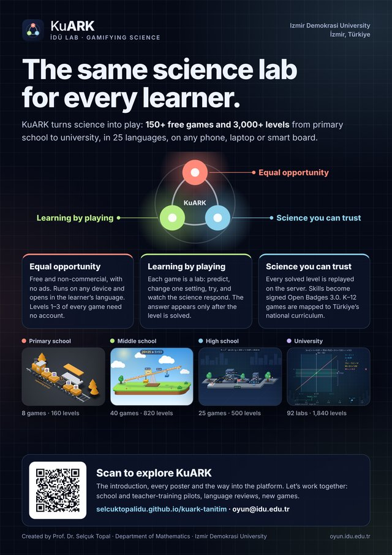

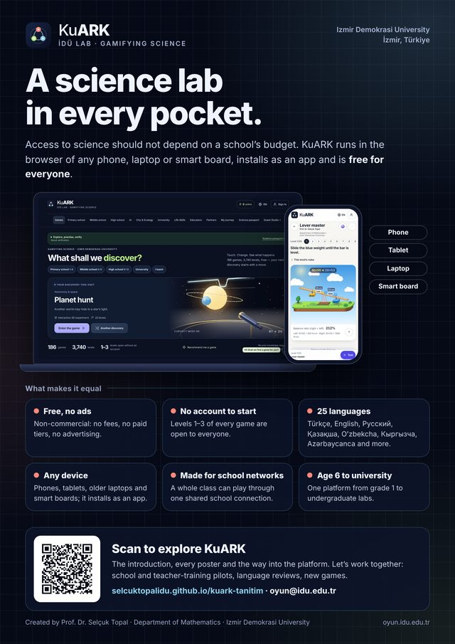

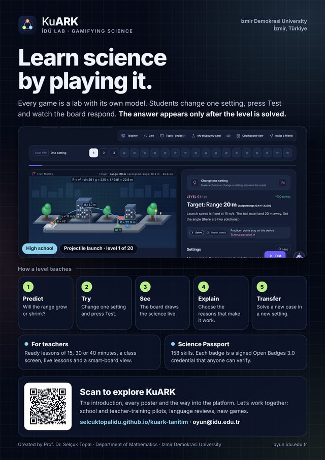

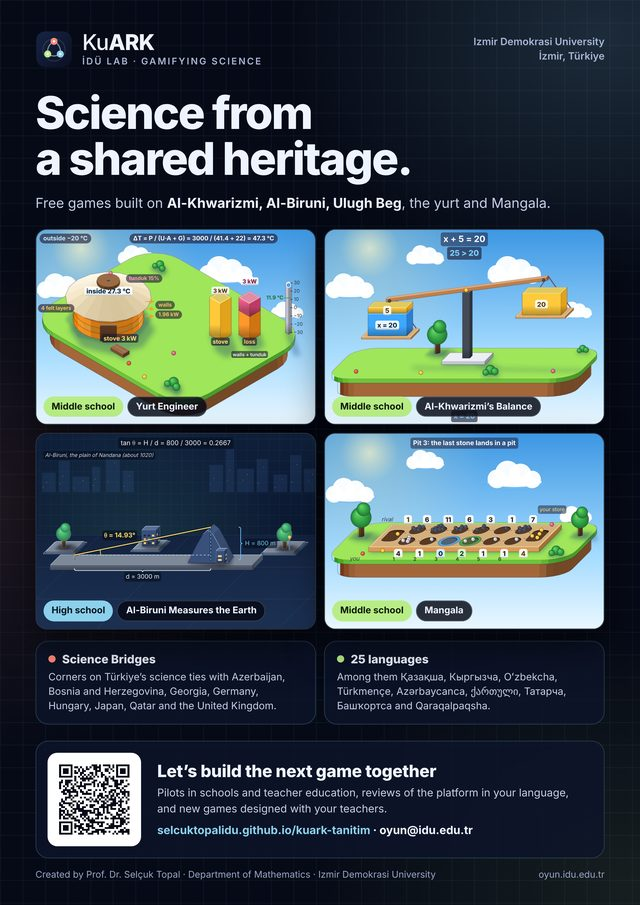

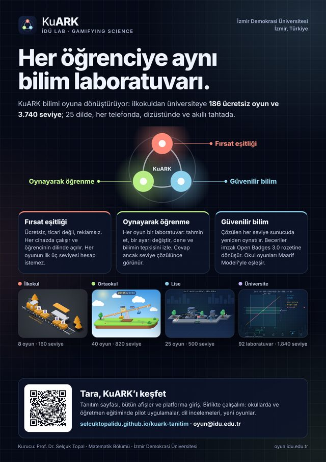

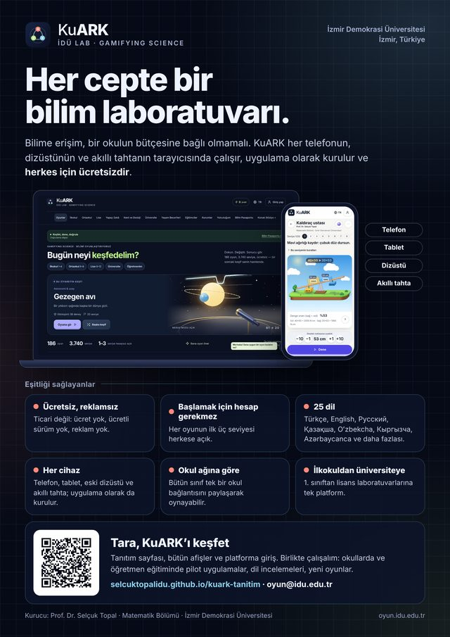

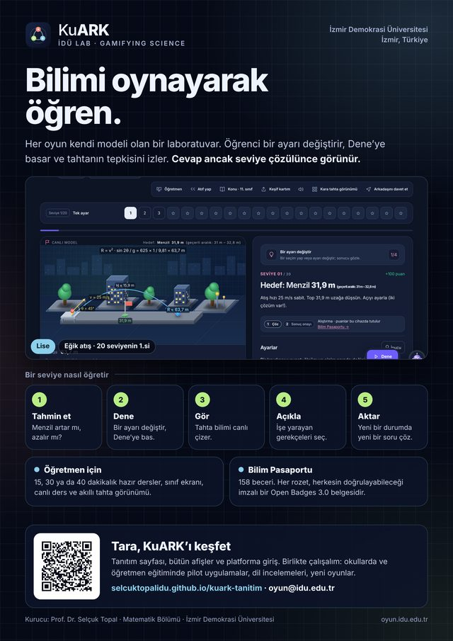

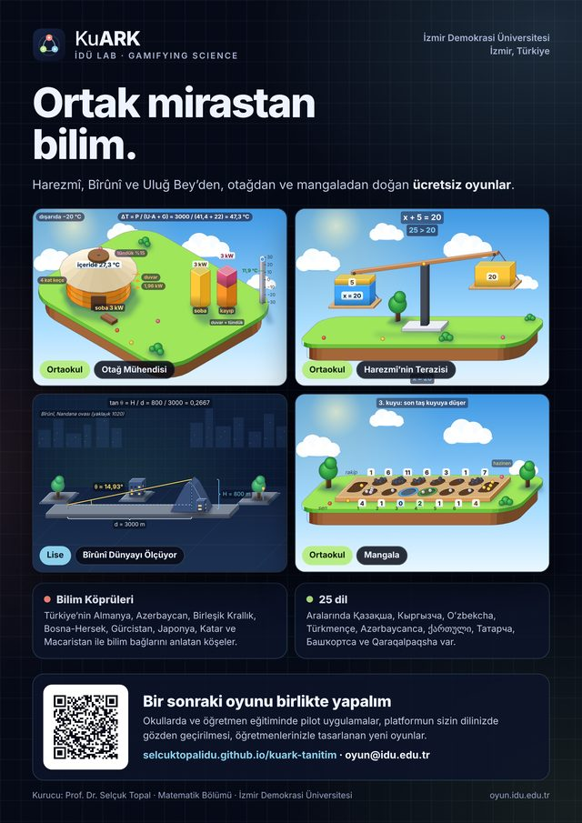
All four posters in one PDFDört afiş tek PDF’teIn TurkishİngilizcesiQR cards to print (A4, 10 cards)Basılacak QR kartları (A4, 10 kart)
Going Global 2026, İstanbul: a five-page posterGoing Global 2026, İstanbul: beş sayfalık afiş
How KuARK teaches, the technology behind it, equity at scale in 26 languages, and ways to partner. In English, A4.
KuARK’ın nasıl öğrettiği, arkasındaki teknoloji, 26 dilde fırsat eşitliği ve ortaklık yolları. İngilizce, A4.

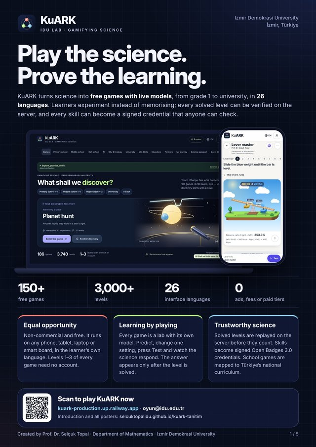

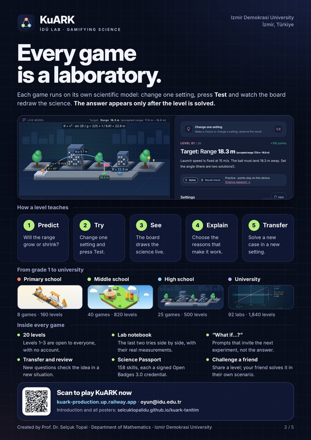

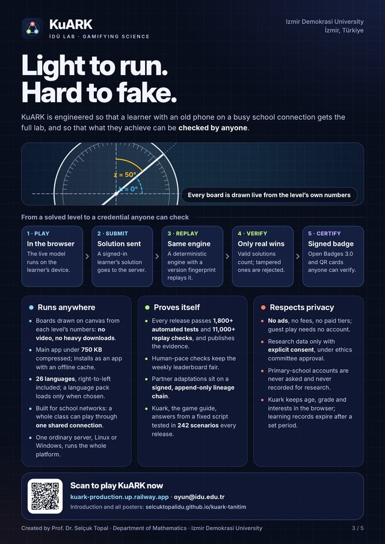

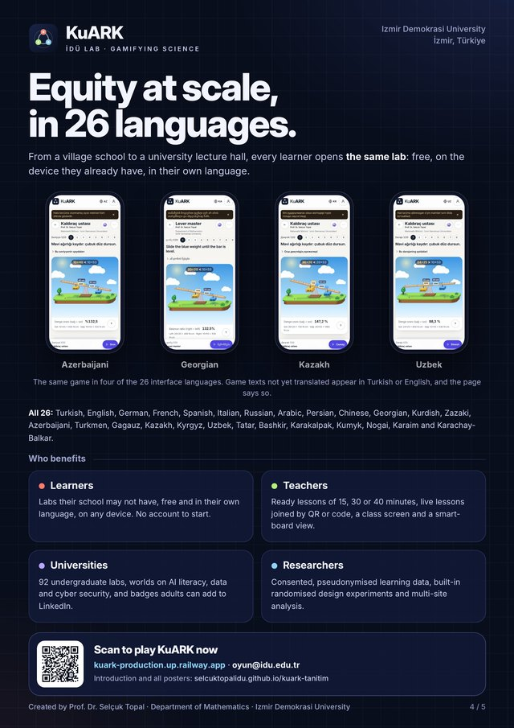

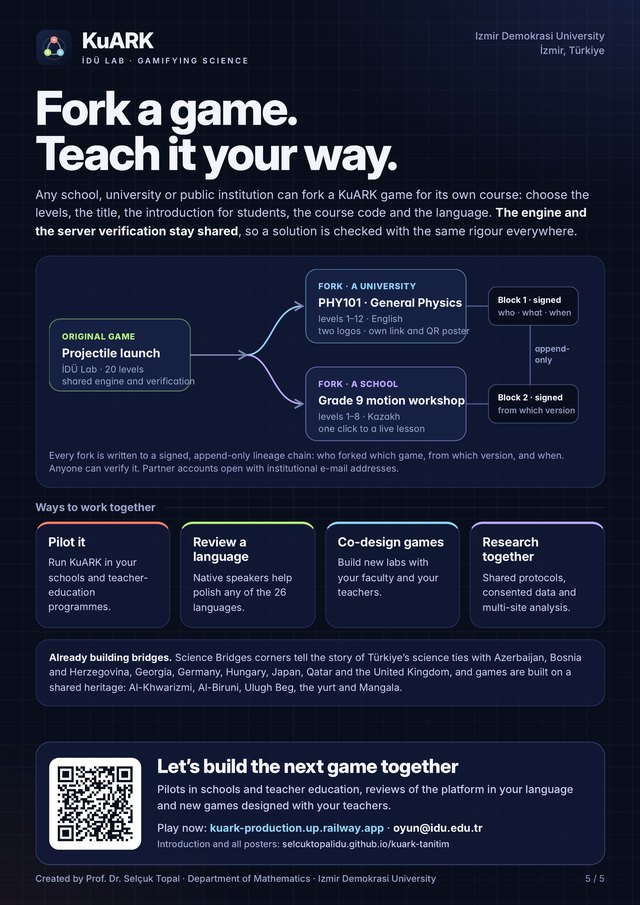
All five pages in one PDFBeş sayfa tek PDF’te
School-visit presentations (in Turkish)Okul ziyaretleri için sunumlar
Four 16:9 decks for primary, middle and high schools and universities: how a level teaches, the games, board mode, live lessons in the computer lab, curriculum alignment and safety.
İlkokul, ortaokul, lise ve üniversite için dört sunum (16:9): bir seviyenin nasıl öğrettiği, oyunlar, tahta modu, bilgisayar laboratuvarında canlı ders, müfredat uyumu ve güvenlik.
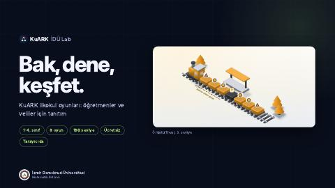
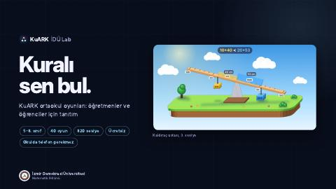
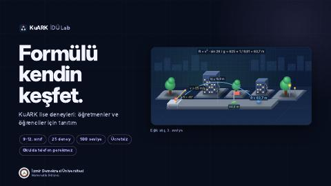
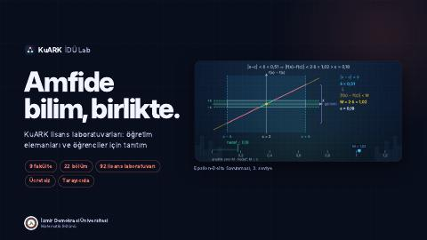
Work with usBirlikte çalışalım
We are looking for schools, universities and ministries to take the platform further together.
Platformu birlikte ileri taşımak için okullar, üniversiteler ve bakanlıklarla çalışmak istiyoruz.
Pilots in schools and teacher educationOkullarda ve öğretmen eğitiminde pilot
Use the games with your schools or teacher-training programmes; we help with setup and lesson plans.Oyunları okullarınızda ya da öğretmen yetiştirme programlarınızda kullanın; kurulumda ve ders planlarında yardımcı oluruz.
Review a language packBir dil paketini gözden geçirin
Educators check the platform in their own language and send corrections.Eğitimciler platformu kendi dillerinde inceler ve düzeltmeleri bize iletir.
Design a game togetherBirlikte oyun tasarlayalım
Bring a topic your students find hard; we turn it into a game that carries your name.Öğrencilerinizin zorlandığı bir konuyu getirin; onu sizin adınızı taşıyan bir oyuna dönüştürelim.